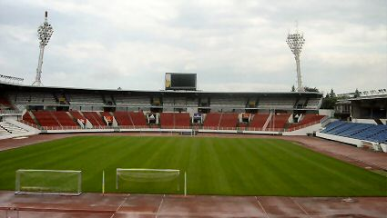
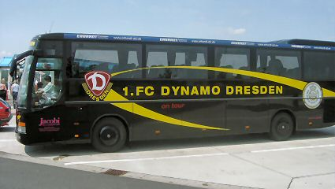

|
Slovan Liberec - Roda JC (1-0) 17 juli 2004 |
Slovan
Liberec - Roda JC (1-0) 17 juli 2004
Bij het drielandenpunt van Duitsland, Polen en Tsjechië
ontmoetten
we puur toevallig de Hanenbretboys inclusief privé chauffeur en een
tweetal aspirant-HBB'ers.
Toen we het hotel in Liberec bereikten waren Mo, Ivo en Ad al
de
stad in terwijl de Rodaworldcrew in het hotel van de Roda-selectie
was om de kaarten af te halen die Rene Trost aan alle Rodafans
cadeau deed. Een mooi gebaar!
Na een stevige maaltijd en enkele biertjes begaven we ons naar
de
"Sportbar", een prachtig ingericht supporterscafé.
Een halveliter kost tussen de 60 en 80 eurocent.
Verkeerd shirt, mooi affiche...
Pozor! Toto vozidlo je zablokovano! Oftewel: u heeft een
wielklem
te pakken! Niet alleen ons overkwam het, maar ook de mobiel van
Tweety.
Stan the gunman bleek niet om te lullen en trok zijn boekje.
Ondertussen wilde zijn loopjongen een wielklem aanbrengen bij de
bus van de HBB. Dat konden we nog net verijdelen maar ook zij
kregen een bekeuring.
Op weg naar het stadion hadden we begrepen dat drie FP-mensen
in het centrum van de stad problemen hadden gehad met een
groep Liberec-hools.
Gewaarschuwd lopen we naar het kleine stadion U Nisy wat "Aan
de Neisse" betekent.
Wij moesten links aan de gloednieuwe lange zijde.
Kijkje onder onze tribune. De verkoop van bier en worst ging
hier
bijna net zo langzaam als bij ons in het PLS.
Aanvankelijk dachten we met slechts 19 man te zijn.
Maar de diehards uit Roerdalen waren er ook. Deze gasten reden
even op en neer in EEN dag!!!!!
Ook was er steun uit onverwachte hoek: ongeveer 20 Nederlandse
vakantiegangers kwamen Roda aanmoedigen.
Waaronder dit meisje dat hoogstwaarschijnlijk
dacht
dat Oranje nog eens
tegen Tsjechië moest spelen.
De tribune aan onze kant zat aardig vol. Links in de hoek
zitten de
ultra's. Hier hing ook de gekaapte vlag van Mo. Maar deze wist zijn
bezit met succes terug te halen (helaas niet meer kreukvrij ;-)
Het duurde even eer onze fotografen in de gaten hadden dat de
meest fotogenieke persoon uiterst rechts zat......
Het knusse stadionnetje had een redelijk professioneel
beeldscherm
waar veel voetbalmomenten op werden herhaald.
Om 18.00 uur is de aftrap.
De wedstrijd is niet veel soeps. Na 40 seconden al komt Roda
met
de schrik vrij.
Na een overtreding van Van Dijk krijgt Liberec een vrijetrap
die
door Papousek verzilverd wordt in de 20e min.
In de tweede helft werd Roda steeds sterker maar dat ene o zo
belangrijke goaltje wilde maar niet vallen.
De moegestreden spelers komen ons bedanken.
Een kwartier voor tijd kwamen er steeds meer hangjongeren bij
ons plaatsnemen. Druk mobilofoonverkeer tussen stewards en de
"policie" verraadde dat er wat stond te gebeuren.
Er vielen wat klappen en wij konden onder politiebegeleiding
afmarcheren naar de uitgang. Op straat waren we weer vogelvrij.
Met 15 (!) man terug naar het hotel in het busje van de HBB.
Zo te zien valt er te leven met deze kleine nederlaag.
Nadat de bar van het hotel sloot gingen we naar de kelder van
discotheek Jaguar. Enkele leuke tieners en bier in voetbalblikjes.
Let niet op de malloot op de voorgrond maar op de prachtige
muurschildering van echte koempels op de achtergrond.
Een uitstekend idee voor de Kick Off !!!
Hierna namen we een taxi naar discotheek Hut waarwe vrijwel de
complete Rodaselectie aantroffen. Het was er supergezellig.
Bodor scoorde gigantisch deze avond!
Vriendelijke mensen, gezellige sfeer.
Butcher bedankte elke Rodafan persoonlijk voor de support.
The day after. Iedereen is inmiddels terug naar huis; wij
blijven
nog een weekje en kunnen de krantenkoppen proberen te
ontraadselen. Het schijnt dat de spelers van Liberec, (je spreekt dat
uit als Liberets), last hadden van de warmte en van maagkrampen.
In de Sportbar heeft de "manager" van Liberec zojuist een
affiche
gemaakt en opgehangen voor de return-match.

Op ruim 1000m+ staat een enorme communicatietoren met hotel op
de berg Jested. Deze top vind je terug in het clublogo.

We trekken even door naar Praag voor een stadionpenetratie
(het
blijft een mooi woord) bij Slavia Praag. Het stadion is een gaaf
voorbeeld van betonrot en metaalmoeheid. Het is een wonder dat
het nog niet is ingestort.
Slavia Praag dat ook in de Gambrinus Liga speelt. Gambrinus is
een biermerk. We kenden al de Jupiler League en de Amstelcup.
Bier en voetbal gaan kennelijk goed samen :-)
We dachten even dat we in Heerenveen verzeild waren geraakt
maar dit is een onvervalst Sparta Praag rund voorzien van een
Roda-sjaaltje.
Het stadion van Sparta ziet er een stuk beter uit. We mochten
hier
maar EEN foto maken onder het wakend oog van een security-gast.
We hebben er dan ook maar een stuk of tien gemaakt....

Op de terugreis kwamen we deze tegen in voormalig
Oost-Duitsland.
Roda wacht de lastige maar niet
onmogelijke opgave om twee keer te
scoren tegen Liberec. Als dat lukt zonder tegengoal te incasseren
wacht een mooie trip naar Nantes. Die club heeft een stadion van
een bijzonder mooie architectuur.